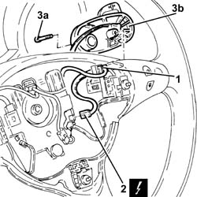
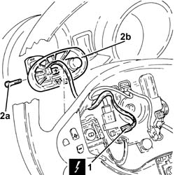
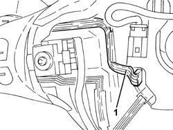
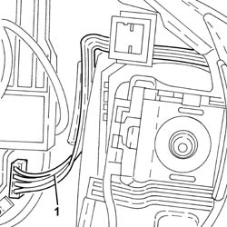

2127A30 HYDRAULIC GEARBOX GEAR SELECTION LEVER ON STEERING WHEEL ONE LH OR RH R R
- Path
- Procedures > 21 GEARBOX UNIT > 2127 HYDRAULIC TRANSMISSION EXTERNAL LINKAGE > 2127A HYDRAULIC TRANSMISSION EXTERNAL LINKAGE > 2127A30 HYDRAULIC GEARBOX GEAR SELECTION LEVER ON STEERING WHEEL ONE LH OR RH R R
- Kind
- repair procedure (removal / refitting; the operation number is the code)
- Applies to
- engines: 2.0 JTS; all production periods; only with equipment: Smart gearbox
- Interactive page
- https://sloeber94.github.io/elrnDB-aGt/en/#/125001276
Applies to: engines: 2.0 JTS; all production periods
 Removing
Removing
 Refitting
Refitting- PROCEED AS FOLLOWS FOR THE RIGHT LEVER.
1. Disconnect the electrical connection for the horn, then push the connector on the steering as far as possible to access the electrical wiring for the gear selector control lever.
2. Disconnect the electrical connection for the gear selection control lever.
Description | Connector | |
|---|---|---|
2 | Gear controls on the steering wheel | See H38 GEAR CONTROLS ON STEERING WHEEL |

Applies to: engines: 2.0 JTS; all production periods
- PROCEED AS FOLLOWS FOR THE LEFT LEVER.
1. Disconnect the electrical connection for the gear selection control lever.
Description | Connector | |
|---|---|---|
1 | Gear controls on the steering wheel | See H38 GEAR CONTROLS ON STEERING WHEEL |
2. Undo the bolt (2a) and remove the gear selection control lever (2b) releasing the eletrical wiring.

Applies to: engines: 2.0 JTS; all production periods
Refitting
Removing- PROCEED AS FOLLOWS FOR THE LEFT LEVER.
- Place the gear selection control lever back in its housing taking care to position the electrical wiring as illustrated in the diagram and secure it using the bolt.
- Disconnect the electrical connection for the gear selection control lever.

Applies to: engines: 2.0 JTS; all production periods
- PROCEED AS FOLLOWS FOR THE RIGHT LEVER.
- Place the gear selection control lever back in its housing taking care to position the electrical wiring as illustrated in the diagram and secure it using the bolt.
- Connect the electrical connection for the gear selection control lever.
- Connect the electrical connection for the horn.

Applies to: engines: 2.0 JTS; all production periods